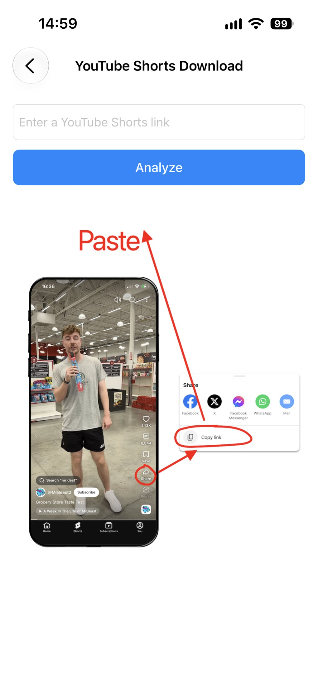
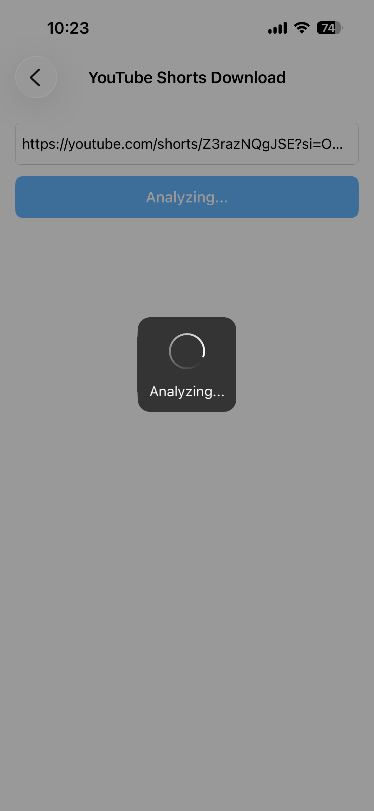
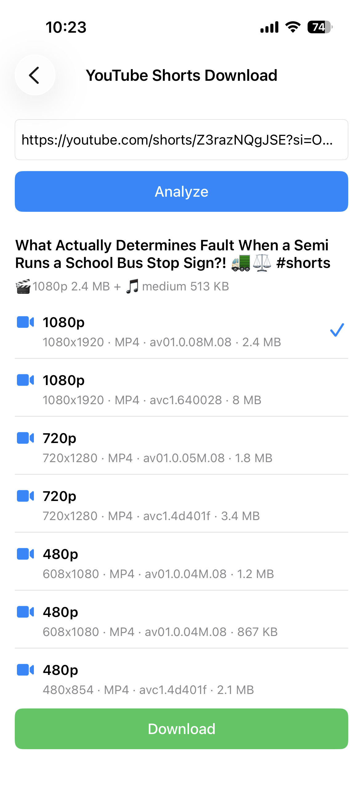

Télécharger des YouTube Shorts
Vous voulez garder un YouTube Short pour le regarder hors ligne ou le partager plus tard ? ImageGet simplifie tout. Collez le lien d'un YouTube Shorts : l'app analyse la vidéo et la télécharge directement dans votre photothèque — sans capture d'écran, sans outil tiers. Voici comment télécharger des YouTube Shorts, étape par étape.
Téléchargez ImageGet gratuitement — enregistrez des YouTube Shorts en un geste.
Télécharger ImageGetÉtape 1 : copiez le lien du YouTube Shorts
Ouvrez l'app ou le site YouTube et trouvez le Short que vous voulez garder. Dans l'app YouTube, touchez Partager, puis Copier le lien. Sur un navigateur d'ordinateur, copiez simplement l'URL depuis la barre d'adresse.

Étape 2 : collez-le dans ImageGet
Ouvrez ImageGet et collez le lien du YouTube Shorts. L'app analyse la vidéo automatiquement — pas de recherche, pas d'attente. En un instant, ImageGet vous affiche le Short, prêt à être téléchargé.

Étape 3 : téléchargez le Short
Touchez Télécharger et choisissez la qualité souhaitée. Le Short est enregistré comme une vidéo dans votre photothèque — avec le son. Vous pouvez le revoir à tout moment, même hors ligne, sans ouvrir YouTube.

Astuces pour télécharger des Shorts
- Téléchargements gratuits — la formule gratuite inclut 3 téléchargements pour les YouTube Shorts ; passez à Premium pour des téléchargements illimités.
- Choisissez votre qualité — différentes résolutions sont disponibles pour équilibrer la taille du fichier et la qualité de l'image.
- Sans capture d'écran — ImageGet télécharge le Short directement, il n'y a donc aucune perte de qualité liée à un ré-enregistrement.
FAQ
Puis-je télécharger des YouTube Shorts gratuitement ?
Oui — la formule gratuite inclut 3 téléchargements pour les YouTube Shorts. Passez à Premium pour des téléchargements illimités.
Les YouTube Shorts sont-ils enregistrés avec le son ?
Oui — les Shorts sont enregistrés comme des vidéos avec le son, dans la qualité de votre choix.
Dois-je enregistrer mon écran pour sauvegarder un Short ?
Non. ImageGet télécharge le Short directement — aucun enregistrement d'écran n'est nécessaire.
Voir. Enregistrer. Simple.
Téléchargez ImageGet gratuitement et enregistrez des YouTube Shorts en un geste.
Télécharger ImageGet